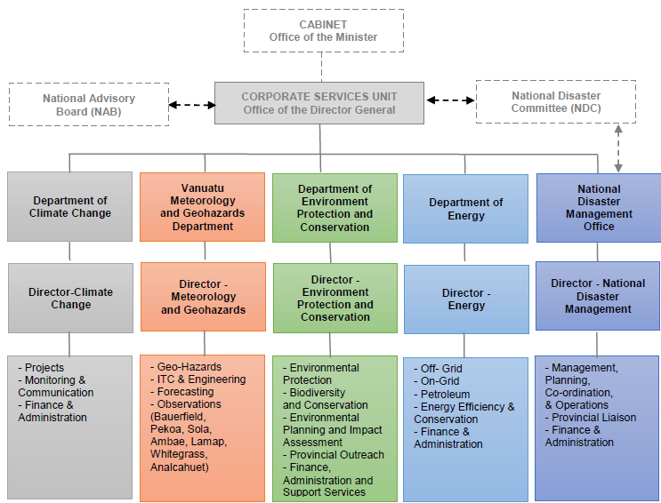

The Republic of Vanuatu is an island nation located in the Western Pacific Ocean. Vanuatu is an archipelago of over 80 islands stretching 1,300 kilometers from North to South in the Western Pacific Ocean. Vanuatu’s society, environment and economy are highly vulnerable to climate change and disaster risks. In Vanuatu climate change is likely to impact all sectors especially agriculture, water, coastal and marine resources and infrastructure as well as tourism. The devastating consequences of the category 5 tropical cyclone in March 2015 and the subsequent severe El Nino event highlight country’s risk from natural disasters. Predicted increases in extreme weather from climate change means Vanuatu will face even greater impacts in the future, also living with the constant threat of volcanic eruptions, earthquakes and tsunamis.
Vanuatu has negligible GHG emissions and forest sector act as a net sink; however, the Government of Republic of Vanuatu is fully committed to effective, and transparent implementation of the Paris Agreement (PA). The Government of Republic of Vanuatu notes with great concern that the objective of the Paris Agreement can only be achieved through a significant enhancement of the level of action complemented by international support provided to achieve conditional contributions, as reflected in the Nationally Determined Contributions (NDCs). In that spirit, the Republic of Vanuatu presents It’s enhanced NDCs for the period 2021-2030 and calls on all Parties to increase ambition and move collectively onto emission reduction pathways consistent with the Paris Agreement's 1.5°C warming limit.
The Republic of Vanuatu’s long term vision on climate change and aspirations are embedded within the fundamental duties defined under its constitution: “to protect the Republic of Vanuatu and to safeguard the national wealth, resources and environment in the interests of the present generation and of future generations” and guided by its National Vision - “A stable, sustainable and prosperous Vanuatu”, under the National Sustainable Development Plan (NSDP) 2016 to 2030 also called Vanuatu 2030: The People’s Plan. The collective developmental aspirations under the NSDP includes: A vibrant cultural identity underpinning a peaceful, just and inclusive society; Supported by responsive and capable state institutions delivering quality public services, including health and education, to all citizens; Maintaining a pristine natural environment on land and at sea that serves our food, cultural, economic and ecological needs; With enhanced resilience and adaptive capacity to climate change and natural disasters; and A stable economy based on equitable, sustainable growth that creates jobs and income earning opportunities accessible to all people in rural and urban areas.
The Republic of Vanuatu’s long-term climate action vision is governed by the Vanuatu Climate Change and Disaster Risk Reduction Policy 2016-2030 (CCDRR Policy – to promotes good governance and establishes priorities and strategies for future climate actions; and ‘Meteorology, Geological Hazards and Climate Change Act No. 25 of 2016 (Climate Change Act)’, that provides provisions (governance and administrative provisions), transparency and roles and responsibility for meteorology, geological hazards and climate change and for related purposes.
Vanuatu submitted its first NDC to the UNFCCC on 21st September 2016. The main mitigation contribution under this submission is to achieve the outcomes and targets under the National Energy Road Map (NERM) and Second National Communication (SNC) extended to 2030. The mitigation contribution for the Vanuatu INDC submission is a sector specific target of transitioning to close to 100% renewable energy in the electricity sector by 2030. This target would replace nearly all fossil fuel requirements for electricity generation in the country and be consistent with the National Energy Road Map (NERM) target of 65% renewable energy by 2020. This contribution would reduce emissions in the energy sector by 72Gg by 2030. Emissions in this sector were around 130 Gg in 2010 but are expected to rise to 240 Gg by 2030 (3% per annum).
The mitigation would thus reduce BAU emissions in the electricity sub-sector by 100% and in the energy sector as a whole by 30%. The target would be conditional, depending on funding commensurate with putting the transition in place being made available from external sources. In addition, The transition to renewable energy based electricity could be accelerated through review and revision of agricultural (coconut oil sector) national policy. Opportunities for reducing the high emissions levels in agriculture will simultaneously be pursued with cooperative programs with nations having similarly high emissions in this sector. The forestry sector mitigation will be attended to as part of the existing REDD+ program. The Government is also aware that waste management is an other area that need attention.
| Vanuatu’s Nationally Determined Contributions (NDCs) | |
|---|---|
| Type |
Activity-based mitigation targets, sectoral and policy targets in key sectors, including emissions reduction in some sub-sectors. The GHG emission reduction targets in this section are all conditional upon international support (financial and technical support) made available. |
| Coverage |
Energy; Agriculture, Forestry and Other Land Use (AFOLU); and Waste |
| Timeframe |
From 1st January 2021- 31st December 2030 Single year target – 2030, including updates on 2025 targets |
| Energy |
Energy Industry (Electricity Generation)
Transport
These three energy sub-sector targets collectively can reduce GHG emissions approximately 78.786 Gg CO2e from energy sector in comparison to BAU scenario in 2030, which is around 40% reduction in comparison to energy sector’s GHG emissions from the BAU scenario. |
| IPPU | Not applicable for Vanuatu, hence not included. |
| AFOLU | Livestock
The impact of above mitigation measures in livestock sub-sector’s net GHG emissions reduction of about 30.977 Gg CO2eq in 2030; which is around 9% lesser than the GHG emissions in BAU scenario. It is to be noted that, actual GHG mitigation potentials of the above measures are not estimated due to lack of availability of data and defined methodology; however, the cumulative impact of these measure will result in higher than the estimate GHG emissions reductions. Forestry
No specific NDC actions identified for forestry sub-sector as the measures to reduce deforestation and promote good land care to accepted mitigation practices are still under development under the REDD+ initiative. Based on the results and outcome from the REDD+ initiative, potential mitigation interventions shall be included in future NDC update. |
| Waste | Solid Waste (Municipal Solid Waste)
With the waste sector mitigation measures, the waste sector’s net GHG emissions will reduce about 29.335 Gg in 2030 in comparison to BAU scenario; which is around 56% lesser than the BAU scenario GHG emissions. It is to be noted that, GHG mitigation potentials for some of the measures identified for the waste sector are not estimated due to lack of data availability of methodology; however, the cumulative impact of the additional measure will result in higher GHG emissions reductions from waste sector. |
| Detailed Description of Mitigation Component of NDC1 | ||||||||||||||||||||||||||||||||||||||||||||||||||||||||||||||||||||||||||||||||||||||||||||||||||||||||||||||||||||||||||||||||||||||||||||||||||||||||||||||||||||||||||||||||||
|---|---|---|---|---|---|---|---|---|---|---|---|---|---|---|---|---|---|---|---|---|---|---|---|---|---|---|---|---|---|---|---|---|---|---|---|---|---|---|---|---|---|---|---|---|---|---|---|---|---|---|---|---|---|---|---|---|---|---|---|---|---|---|---|---|---|---|---|---|---|---|---|---|---|---|---|---|---|---|---|---|---|---|---|---|---|---|---|---|---|---|---|---|---|---|---|---|---|---|---|---|---|---|---|---|---|---|---|---|---|---|---|---|---|---|---|---|---|---|---|---|---|---|---|---|---|---|---|---|---|---|---|---|---|---|---|---|---|---|---|---|---|---|---|---|---|---|---|---|---|---|---|---|---|---|---|---|---|---|---|---|---|---|---|---|---|---|---|---|---|---|---|---|---|---|---|---|---|---|
| 1. Quantified information on the reference point, including, as appropriate, a base year | ||||||||||||||||||||||||||||||||||||||||||||||||||||||||||||||||||||||||||||||||||||||||||||||||||||||||||||||||||||||||||||||||||||||||||||||||||||||||||||||||||||||||||||||||||
| a Reference year(s), base year(s), reference period(s) or other starting point(s) |
2010 (Base year) |
|||||||||||||||||||||||||||||||||||||||||||||||||||||||||||||||||||||||||||||||||||||||||||||||||||||||||||||||||||||||||||||||||||||||||||||||||||||||||||||||||||||||||||||||||
| b. Quantifiable information on the reference indicators, their values in the reference year(s), base year(s), reference period(s) or other starting point(s), and, as applicable, in the target year |
As per the Greenhouse Gas Inventory (under the second National Communication Report), the net GHG emissions (excluding removals) for the base year, was 728. 359 Gg CO2eq. The direct GHG emission for the following IPCC sectors is: Energy: 122.44 Gg Gg CO2eq IPPU: 0 Gg Gg CO2eq AFOLU: 587.48 Gg CO2eq Waste: 10.75 Gg CO2eq Others: 0 Gg CO2eq |
|||||||||||||||||||||||||||||||||||||||||||||||||||||||||||||||||||||||||||||||||||||||||||||||||||||||||||||||||||||||||||||||||||||||||||||||||||||||||||||||||||||||||||||||||
| c. Target relative to the reference indicator, expressed numerically, for example in percentage or amount of reduction | The quantified targets presented in this section are all conditional, will be implemented upon international (Technical and Financial) support by 2030. Energy Sector:
d. For strategies, plans and actions referred to in Article 4, paragraph 6, of the Paris Agreement, or polices and measures as components of nationally determined contributions where paragraph 1(b) above is not applicable, Parties to provide other relevant information The policies presented in this section will be developed/enhanced and implemented upon international (Technical and Financial) support by 2030. The policy targets that are not quantified are: Energy Sector:
AFOLU Sector:
Waste Sector:
e. Information on sources of data used in quantifying the reference point(s) |
The key data references and documents assessed (but not limited) include:
f. Information on the circumstances under which the Party may update the values of the reference indicators |
Under following circumstances under which Vanuatu may update or change the values of the reference indicators:
2. Time frames and/or periods for implementation |
a. Time frame and/or period for implementation, including start and end date, consistent with any further relevant decision adopted by the CMA;
|
From 1st January 2021- 31st December 2030 b. Whether it is a single-year or multiyear target, as applicable. |
|
Single-year target 2030, including updates on 2025 targets. (The NDC interventions will be implemented phase wise as per annual work plan; however, the selected target year is 2030). 3. Scope and coverage |
a. General description of the target; |
|
Sectoral activity-based and policy targets, including emissions reduction in some sectors. The Government of Vanuatu will meet conditional targets upon on international support on financing, technology transfer and/or capacity building. b. Sectors, gases, categories and pools covered by the nationally determined contribution, including, as applicable, consistent with IPCC guidelines; |
|
The IPCC Sectors, Sub-sector and Gases applicable for Vanuatu: (1)Energy
(2)Industrial Processes and Product Use (IPPU) - Not Applicable (3)Agriculture, Forestry, and Other Land Use (AFOLU)
(4)Waste
Gases:
c. How the Party has taken into consideration paragraphs 31(c) and (d) of decision 1/CP.21; |
|
Vanuatu is a small island nation with limited economic sectors and activity; hence all the IPCC sectors, sub-sectors and categories are not applicable. In addition, Vanuatu has on technical, financial and skilled resources limitation to collect data, process and analysis of data; hence some of the category not critical or with negligible existence have been excluded. All the key categories and gases identified for Vanuatu have been included in the NDC. Furthermore, Vanuatu is willing to include other remaining categories of anthropogenic emissions or removals (as may become applicable) in its future nationally determined contributions and will continue to include it for all future NDCs. Vanuatu will extend the scope of the coverage of its NDC over time to all categories of anthropogenic emissions and removal, as more robust data becomes available. d. Mitigation co-benefits resulting from Parties’ adaptation actions and/or economic diversification plans, including description of specific projects, measures and initiatives of Parties’ adaptation actions and/or economic diversification plans.
|
Please refer section 4 Adaptation Component of NDC 4. Planning process |
a. Information on the planning processes that the Party undertook to prepare its NDC and, if available, on the Party’s implementation plans, including, as appropriate: |
| i. Domestic institutional arrangements, public participation and engagement with local communities and indigenous peoples , in a gender-responsive manner;
| The Republic of Vanuatu’s NDC has been developed through an inclusive and participatory process, with a series of public and in-person consultations. The Republic of Vanuatu’s NDC enhancement process was led by the Department of Climate Change (DoCC) under the guidance of the Ministry of Climate Change Adaptation, Meteorology, GeoHazards, Energy, Environment and Disaster Management (MoCC). The stakeholders of all line ministries and department of Government of Vanuatu engaged in the NDC enhancement/revision including Department of Energy (DoE), Department of Environmental Protection and Conservation, Department of Forests, Department of Meteorology, Department of Geological Hazards, Department of Fisheries, Department of Livestock, Department of Biosecurity, Department of Strategic Planning and Aid Coordination,Department of Women’s Affairs gender policy etc. also participated in the NDC enhancement process. The private sector including utility companies, energy sector vendors, development partners and NGOs were engaged and consulted during the NDC revision process. The consultation was carried out at the national level given the small size and population of Vanuatu and COVID-19 emergency measures sub-national level consultation could not take place. However; the government departments, private sector participants, NGOs and development partners also involve with the projects and programme at subnational level and adequately represented subnational level stakeholders. Gender equality and other vulnerable group inclusion was an integral part of NDC enhancement process, the gender expert with the DoCC Team was engaged in NDC enhancement and reviewed the enhanced NDC options to review the gender-responsive considerations. The enhanced NDC actions/measures complies with key issues and requirements of gender sensitive design as per the national policies and ‘Gender Analysis and Nationally Determined Contributions (NDCs)’ guidance. None of the identified enhanced NDC actions impacts negatively on gender equality and women’s rights, limits access or influence on women’s access to and control over natural resources and the goods and services covered under the enhanced NDC. Furthermore, the align with the requirements under NSDP and NERM; both the policy extensively covers the gender responsive, youth-specific needs and roles; specifically, on green employment, awareness and capacity building. The enhanced NDC actions/measure will contribute positively on gender, youth and other vulnerable group-specific needs and will provide them opportunities to play actively role in design and implementation. Series of internal and external consultation carried out during the NDC enhancement process and a national level public consultation conducted to receive the comments and feedback on NDC. Further, the enhanced/revised NDC has been endorsed by the Vanuatu's National Advisory Board on Climate Change & Disaster Risk reduction (NAB - the supreme policy making and advisory body for all disaster risk reduction and climate change programs, projects, initiatives and activities in Vanuatu) and Council of Ministers (CoM), Government of Vanuatu. ii. Contextual matters, including, inter alia, as appropriate: |
|
(a) National circumstances, such as geography, climate, economy, sustainable development and poverty eradication; The Republic of Vanuatu is an island nation located in the Western Pacific Ocean. Vanuatu is an archipelago of over 80 islands stretching 1,300 kilometers from North to South in the Western Pacific Ocean. Vanuatu is located between latitude 12º to 23º South and longitude 166º to 173º East. Vanuatu’s terrain is mostly mountainous, with narrow coastal plains with a total land area of 12,336 km2 and a maritime exclusive economic zone of 680,000 km2. Almost 74% of the land area in Vanuatu is covered by natural vegetation, with around one third covered by forest; which is more than 36.1% (440,000 hectares covered by tropical forest).
|
The largest island is Espiritu Santo, while the island of Efate is home to the capital, Port Vila and the central Vanuatu Government. From largest to smallest, the islands are Espiritu Santo, Malekula, Efate, Erromango, Ambrym, Tanna, Pentecost, Epi, Ambae or Aoba, Vanua Lava, Gaua, Maewo, Malo, and Anatom or Aneityum. The two largest islands; Espiritu Santo and Malekula comprise nearly 50% of the total land mass. Larger islands are characterised by rugged volcanic peaks and tropical rainforests. The highest peak, Mount Tabwemasana on Espiritu Santo, is 1877m above mean sea level and the total coastline is about 2,528 km long. Vanuatu is geographically located in the “ring of fire” and the “cyclone belt” of the Pacific. The island nation is located in a seismically and volcanically active region and has high exposure to geologic hazards, including volcanic eruptions, earthquakes, tsunamis and landslides. Almost 81% of its landmass and 76% of its population is exposed to two or more potential hazards including volcanic eruptions, cyclones, earthquakes, droughts, tsunamis, storm surge, coastal and river flooding and landslides. Vanuatu is situated in a tropical maritime climate with characteristic uniform temperature, high humidity and variable rainfall. The tropical climate is moderated by southeast trade winds that occur from May to October. There are two main seasons, hot and wet from November to April, and cool and dry from May to October. Being an equatorial country, Vanuatu has relatively uniform temperature throughout the year with daily temperature ranging from 20°C to 30°C. Temperatures in the warmest months (January - February) are about 4°C higher than those in the coolest months (July-August). According to the most recent (Mini) census undertaken in 2016, Vanuatu’s population was reported to be a total count of 272,459 compared to a population count of 234,023 in the last 2009 census. Vanuatu’s population is largely based within its’ rural areas – 75% as per 2016 mini census. Vanuatu is traditionally known for its strong cultural heritage tradition activities and subsistence farming. The four mainstays of Vanuatu’s economy are agriculture, tourism, offshore financial services, and raising cattle. Exports include copra, kava, beef, cocoa, and timber, and imports include machinery and equipment, foodstuffs, and fuel. In 2017, Vanuatu’s economy grew by 4.4% with a strong performance over the last three previous years. Subsequently it was further projected for the economy to grow by 3.4% in 2018 from 2017 growth levels. Growth was primarily driven by construction activities related to the on-going infrastructure development projects and reconstruction projects from tropical cyclone Pam (VNSO 2019; RBV 2018).
|
(b) Best practices experience related to preparation of the NDC;
|
In addition to the planning process discussed in section 4 (a) (i). The Government of Vanuatu has taken one of its kind initiative to identify the circular economy options for Vanuatu and constituted the metabolic analysis of its economy and economic sectors. A metabolic assessment has been conducted to define a resource efficient and low-carbon future for Vanuatu. The metabolic assessment observed that, the average material uses and per capita GHG emissions in Vanuatu is low in comparison to the global average. The existing consumptionbased resource footprint of Vanuatu is 58% relatively circular. Already for 58% of the materials used, the country is relying on secondary or renewable materials and energy sources. The remaining 42% of material use is not circular and can be characterised as following a linear ‘take-make-waste’ trajectory. These 42% of materials are mostly of foreign origin and collide with the development ambitions of the country since they create issues with waste disposal and the deterioration of natural assets as a result of the pollution of soils, surface waters and marine environments. The circular economy analysis identified some of the opportunities which contribute to the domestic and transboundary (international) GHG emission reductions. Some of the key circular economy actions (CE strategies) identified by the metabolic assessment have been include in Vanuatu’s enhanced NDC. Furthermore, the Government of Vanuatu has also developed and implemented Integrated Monitoring, Reporting and Verification (MRV) Tool for Energy Sector (currently being enhanced to cover additional mitigation sectors according to the updated NDC) and a Monitoring, Reporting Verification Tool for NERM 2016-2030. Vanuatu’s integrated MRV Tool is a first of Its kind initiative to integrate most of the domestic and international climate action monitoring, tracking and reporting requirements. Further, it supports government agencies, development partners, d and NGOs towards evidence-based decisions and data insights reporting. Vanuatu’s integrated MRV Tool has been customized to track, monitor and report data critical for climate actions and sustainable development goals.
|
(c) Other contextual aspirations and priorities acknowledged when joining the Paris Agreement; The Government of Republic of Vanuatu is fully committed to effective, and transparent implementation of the Paris Agreement (PA) and supports the its objective, aims to strengthen the global response to the threat of climate change, in the context of sustainable development and efforts to eradicate poverty, also limit global average temperature rise to 1.5°C; this may poses lower risks for Vanuatu in comparison to 2°C or higher temperatures.
|
The Government of Vanuatu’s commitment reflect in its declaration: “WHEREAS the Government of the Republic of Vanuatu declares its understanding that ratification of the Paris Agreement shall in no way constitute a renunciation of any rights under any other laws, including international law, and the communication depositing the Republic’s instrument of ratification shall include a declaration to this effect for international record; FURTHERMORE, the Government of the Republic of Vanuatu declares that, in light of best scientific information and assessment on climate change and its impacts, it considers the emission reduction obligations in Article 3 of the Kyoto Protocol, the Doha Amendment and the aforesaid Paris Agreement to be inadequate to prevent global temperature increase of 1.5 degrees Celsius above pre-Industrial levels and as a consequence, will have severe implications for our national interests...” b. Specific information applicable to Parties, including regional economic integration organizations and their member States, that have reached an agreement to act jointly under Article 4, paragraph 2, of the Paris Agreement, including the Parties that agreed to act jointly and the terms of the agreement, in accordance with Article 4, paragraphs 16–18, of the Paris Agreement; Not applicable. |
c. How the Party’s preparation of its NDC has been informed by the outcomes of the global stock take, in accordance with Article 4, paragraph 9, of the Paris Agreement; |
As a responsible party to PA, Government of Vanuatu will comply with the decisions under PA and actively participate in the first global stock take in 2023. Furthermore, Vanuatu, enhanced NDCs for the period 2020-2030 is more ambitious than its previous one, both in terms of its sectoral coverage and in terms of its net emission reduction contribution as well. Vanuatu calls on all Parties to increase ambition in line with the best available and most recent science and obligations under the agreement. d. Each Party with an NDC under Article 4 of the Paris Agreement that consists of adaptation action and/or economic diversification plans resulting in mitigation co-benefits consistent with Article 4, paragraph 7, of the Paris Agreement to submit information on: |
i. How the economic and social consequences of response measures have been considered in developing the NDC; |
|
Please refer section 4 Adaptation Component of NDC and annex ii. Specific projects, measures and activities to be implemented to contribute to mitigation co-benefits, including information on adaptation plans that also yield mitigation co-benefits, which may cover, but are not limited to, key sectors, such as energy, resources, water resources, coastal resources, human settlements and urban planning, agriculture and forestry; and economic diversification actions, which may cover, but are not limited to, sectors such as manufacturing and industry, energy and mining, transport and communication, construction, tourism, real estate, agriculture and fisheries. |
|
Please refer section 4 Adaptation Component of NDC and annex 5. Assumptions and methodological approaches, including those for estimating and accounting for anthropogenic greenhouse gas emissions and, as appropriate, removals: |
a. Assumptions and methodological approaches used for accounting for anthropogenic greenhouse gas emissions and removals corresponding to the Party’s nationally determined contribution, consistent with decision 1/CP.21, paragraph 31, and accounting guidance adopted by the CMA; |
|
Vanuatu account for its anthropogenic GHG emissions and removals using the 2006 Intergovernmental Panel on Climate Change (IPCC) Guidelines for National Greenhouse Gas Inventories). Two additional guidelines will be considered for quality assurance: the IPCC Good Practice Guidance and Uncertainty Management in National GHG Inventory (2000) and the IPCC Good Practice Guideline for Land Use, Land-Use Change, and Forestry (2003). b. Assumptions and methodological approaches used for accounting for the implementation of policies and measures or strategies in the nationally determined contribution; |
As discussed above, Vanuatu will also apply specific assumptions and methodologies where relevant when accounting for various policies and measures in its Biennial Update Report, Biennial Transparency Report, or National Communications. c. If applicable, information on how the Party will take into account existing methods and guidance under the Convention to account for anthropogenic emissions and removals, in accordance with Article 4, paragraph 14, of the Paris Agreement, as appropriate; As discussed above, The IPCC 2006 Guidelines have been used to calculate emissions in the GHG Inventory for National Communication and NDC. |
d. IPCC methodologies and metrics used for estimating anthropogenic greenhouse gas emissions and removals; |
Further to above discussion, the preparation of national GHG inventories for Vanuatu, uses both Tier1 and Tier2 methodologies (as appropriate) of 2006 IPCC guidelines. |
e. Sector-, category- or activity-specific assumptions, methodologies and approaches consistent with IPCC guidance, as appropriate, including, as applicable: |
| i. Approach to addressing emissions and subsequent removals from natural disturbances on managed lands; |
As discussed in the above sections, all the categories are not applicable for Vanuatu. Furthermore, due to limited data availability and capacity limitation, not all the sectors are covered in Vanuatu’s NDC. However, in the future, Vanuatu would like to update its emission inventories; and will cover all the applicable sectors following the 2006 IPCC guidelines. ii. Approach used to account for emissions and removals from harvested wood products; |
Please refer 5 (e) (i) |
iii. Approach used to address the effects of age-class structure in forests; |
Please refer 5 (e) (i) |
f. Other assumptions and methodological approaches used for understanding the nationally determined contribution and, if applicable, estimating corresponding emissions and removals, including: |
i. How the reference indicators, baseline(s) and/or reference level(s), including, where applicable, sector-, category- or activity-specific reference levels, are constructed, including, for example, key parameters, assumptions, definitions, methodologies, data sources and models used; |
|
Not Applicable ii. For Parties with nationally determined contributions that contain non-greenhouse-gas components, information on assumptions and methodological approaches used in relation to those components, as applicable; |
|
Not Applicable iii. For climate forcers included in nationally determined contributions not covered by IPCC guidelines, information on how the climate forcers are estimated; |
|
Not Applicable iv. Further technical information, as necessary; |
|
Not Applicable g. The intention to use voluntary cooperation under Article 6 of the Paris Agreement, if applicable. |
|
Vanuatu will explore opportunities for climate resilient socio-economic development with international cooperation and support including carbon market under Article 6. 6. How the Party considers that its NDC is fair and ambitious in light of its national circumstances |
a. How the Party considers that its NDC is fair and ambitious in the light of its national circumstances;
|
Vanuatu is a small island least developed country, that has an insignificant contribution to global GHG emissions, historically it’s GHG emissions have been very low: Vanuatu’s total CO2equivalen emissions was around 0.0011% of the Global GHG emissions for year 2015. Though, Vanuatu is among the most vulnerable to climate change and its impact. Further, Vanuatu has taken an ambitious target of transitioning to close to 100% renewable energy in the electricity sector by 2030. With this enhanced NDC, Vanuatu is planning to further reduce its national GHG emissions by 2030. This NDC, and the accompanying information, reflects Vanuatu’s commitment under the Paris Agreement to address climate change. b. Fairness considerations, including reflecting on equity;
|
Same as above c. How the Party has addressed Article 4, paragraph 3, of the Paris Agreement; |
|
Vanuatu’s enhanced NDC builds on the ambition of its first NDC, both in terms of its sectoral coverage and in terms of its net emission reduction contribution as well. d. How the Party has addressed Article 4, paragraph 4, of the Paris Agreement; |
|
In addition to the sectoral activity-based targets for electricity generation, transport energy efficiency, other livestock, waste sector, this NDC also includes additional policy targets for sectors where data and/or baseline information is not available such as for livestock, solid waste and waste water management. This paves way for Vanuatu to establish economy-wide emissions target, based on national circumstances and capabilities. e. How the Party has addressed Article 4, paragraph 6, of the Paris Agreement. |
|
In addition to the sectoral activity-based targets Vanuatu’s enhanced NDC also includes policy targets (See section 1(d)) for areas where data and/or baseline information is not available. These areas include livestock and waste management. 7. How the NDC contributes towards achieving the objectives of the Convention as set out in its Article 2 |
a. How the NDC contributes towards achieving the objective of the Convention as set out in its Article 2; |
|
Please refer section 6(a) b. How the NDC contributes towards Article 2, paragraph 1(a), and Article 4, paragraph 1, of the Paris Agreement. |
Please refer section 6(a) |
5. Adaptation Component of Updated NDCAs per Article 7.10 and 7.11 of the Paris Agreement, Vanuatu will submit an adaptation communication, which will include its priorities, implementation and support needs, plans and actions through the National Adaptation Plan (NAP). The NAP will outline Vanuatu's contribution towards meeting the adaptation goal set out in the Paris Agreement and the required means of implementation to implement that contribution fully. However, in early 2020, with support from the Regional Pacific Nationally Determined Contributions (NDC) Hub the Vanuatu Government set out to enhance the adaptation component of its NDC. The purpose of that particular process was to strengthen the existing content on adaptation in the NDC by developing quantifiable targets for adaptation that will be communicated to the UNFCCC. The objectives were to do so through developing national quantifiable climate change adaptation targets and indicators for the in two priority sectors: agriculture and water. Further to this, this process aimed to determine how to incorporate climate change loss and damage (L&D) considerations into the development of water and agriculture sector targets and indicators. Adaptation targets and indicators for the water and agriculture sector were developed with the objectives of maintaining food security, income security and water security. Stakeholders placed high priority on income security by strengthening small-medium enterprises. Such a target has not emerged before in any of the previous policies or strategies. A second area of importance was the production of food for own consumption. The overarching goal for the agricultural sector was identified as: “Agriculture is able to support household income and food needs in a changing climate”. To achieve this goal, two targets were established (Annexed):
The developed targets and indicators for the water sector were broad but with a focus on ensuring water availability during average rainfall amount as well as drought by means of appropriate infrastructure. The overarching goal for the water sector was identified as: "The water management system is able to support water needs for all communities in a changing climate". In contributing to the achievement of this goal, two targets were established:
Loss and Damage (L&D)Loss and damage from climate change impact is included in Vanuatu’s National Climate Change and Disaster Risk Reduction Policy (NCCDRRP) and outlines concrete actions. National stakeholders identified L&D as already occurring, observable and is seen as a future threat, in some instances existential. Stakeholders identified all types of L&D which included, floods, storms, hurricanes, salinisation and slow onset events. Assistance is required in terms of finance and capacity building in order to be able to address L&D. Targets and indicators were developed that are in line with the actions outlined in the NCCDRRP and are based on stakeholders’ responses of what is needed to address L&D. All targets and indicators for adaptation and L&D that are presented here are country-driven and in line with existing policies and frameworks, allowing for integration of adaptation efforts in already existing national processes. The process applied in this initiative provide a basis to expand adaptation targets and indicators development to other sectors that occur next in the order of priority for Vanuatu such as the fisheries and ocean sector as well as tourism. The same applies to NDC reporting on agriculture and water sectors. Once in-country capacity is increased and improved, adaptation reporting in other sectors can be included. 6. Means of ImplementationThe tentative cost of achieving the Vanuatu’s conditional mitigation targets is estimated to be USD $ 173.6 Million. This cost estimation does not cover the costs of existing measures i.e. measures included in the first NDC of Vanuatu); since these measure are already under implementation and already budgeted under NERM: 2016-2030. Furthermore, the costs for additional measures are tentative and based on similar international experiences, national circumstances of Vanuatu and other assumptions. A detailed scoping and feasibility study of enhanced NDC measures will be conducted under the NDC implementation roadmap development to determine the exact additional investment requirements. To achieve the conditional targets, Vanuatu anticipates financial, technological and capacity building support from global funds such as the Green Climate Fund, Global Environment Facility, Adaptation Fund, Least Developed Countries Fund; and bilateral/multilateral agencies and development partners. These funds will be utilized to bolster limited national resources and technical capacities for scaling up climate action. The activities will be implemented over a period of 10 years (2021 -2030) by integrating them under the budget as various subsidy policies, projects or programmes. As these targets are well aligned with the country’s existing policies and plans, they will have high ownership and will be implemented in a timely manner. Vanuatu has already in place the institutional structure for implementation of enhanced NDC, the National Advisory Board (NAB), is the supreme policy making and advisory body for all disaster risk reduction and climate change programs, projects, initiatives and activities in Vanuatu. NAB develops Disaster Risk Reduction (DRR) and Climate Change policies, guidelines and positions, advises on international and regional DRR and CC obligations, facilitates and endorses the development of new DRR & CC programs, projects, initiatives and activities, acts as a focal point for information sharing and coordination on CC/DRR, as well as guides and coordinates the development of national climate finance processes. The Ministry of Climate Change Adaptation (MoCC), Meteorology & Geo-Hazards, Energy, Environment and National Disaster Management is the nodal agency as part of the Government's efforts to streamline Vanuatu's climate change natural disaster responses and sustainable development of the environment. The Department of Climate Change (DoCC) within the Ministry of Climate Change, mandated to: ensure that high quality services are provided in relation to climate change in Vanuatu. The Ministry and the National Advisory Board (NAB) are mandated with coordinating all government and non-government initiatives addressing climate change and disaster risk reduction in the country. The Vanuatu’s enhanced NDC will be implemented in close coordination with other line ministries like Ministry of Infrastructure and Public Utilities (MIPU), Ministries of Education and Health, Ministry of Finance etc. other government departments specially Department of Energy (DoE),Department of Environment, Utilities Regulatory Authority (URA); Public and private sector mainly UNELCO Engie (UNELCO), Vanuatu Utilities & Infrastructure Limited (VUI) and Other Private Sector Service Providers; Doner agencies and development partners and Non-governmental Organizations (NGOs). Figure 1: Vanuatu’s Climate Change-Organizational Structure  Annexure-1 Identified Targets and Indicators for the Agriculture Sector
Annexure-2 Identified Adaptation Targets and Indicators for the Water Sector
| ||||||||||||||||||||||||||||||||||||||||||||||||||||||||||||||||||||||||||||||||||||||||||||||||||||||||||